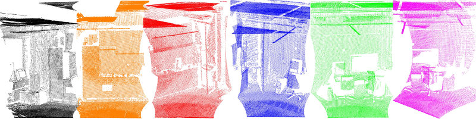
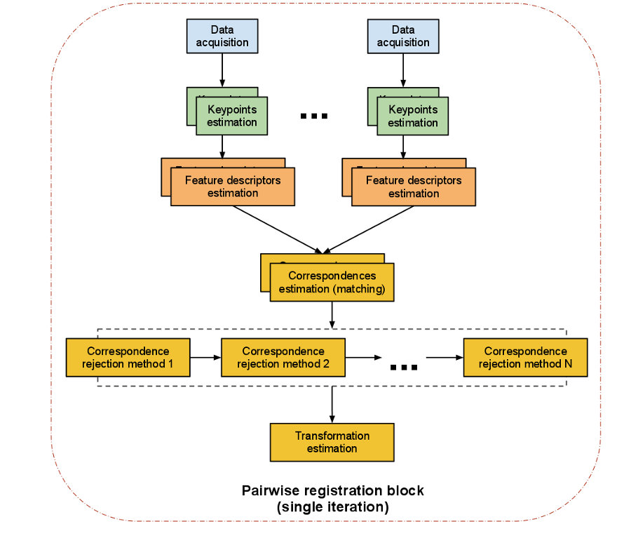

The PCL Registration API
The problem of consistently aligning various 3D point cloud data views into a complete model is known as registration. Its goal is to find the relative positions and orientations of the separately acquired views in a global coordinate framework, such that the intersecting areas between them overlap perfectly. For every set of point cloud datasets acquired from different views, we therefore need a system that is able to align them together into a single point cloud model, so that subsequent processing steps such as segmentation and object reconstruction can be applied.
A motivation example in this sense is given in the figure above, where a set of six individual datasets has been acquired using a tilting 2D laser unit. Since each individual scan represents only a small part of the surrounding world, it is imperative to find ways to register them together, thus creating the complete point cloud model as shown in the figure below.
The algorithmic work in the PCL registration library is motivated by finding correct point correspondences in the given input datasets, and estimating rigid transformations that can rotate and translate each individual dataset into a consistent global coordinate framework. This registration paradigm becomes easily solvable if the point correspondences are perfectly known in the input datasets. This means that a selected list of points in one dataset have to “coincide” from a feature representation point of view with a list of points from another dataset. Additionally, if the correspondences estimated are “perfect”, then the registration problem has a closed form solution.
PCL contains a set of powerful algorithms that allow the estimation of multiple sets of correspondences, as well as methods for rejecting bad correspondences, and estimating transformations in a robust manner from them. The following sections will describe each of them individually.
An overview of pairwise registration
We sometimes refer to the problem of registering a pair of point cloud datasets together as pairwise registration, and its output is usually a rigid transformation matrix (4x4) representing the rotation and translation that would have to be applied on one of the datasets (let’s call it source) in order for it to be perfectly aligned with the other dataset (let’s call it target, or model).
The steps performed in a pairwise registration step are shown in the diagram below. Please note that we are representing a single iteration of the algorithm. The programmer can decide to loop over any or all of the steps.
The computational steps for two datasets are straightforward:
from a set of points, identify interest points (i.e., keypoints) that best represent the scene in both datasets;
at each keypoint, compute a feature descriptor;
from the set of feature descriptors together with their XYZ positions in the two datasets, estimate a set of correspondences, based on the similarities between features and positions;
given that the data is assumed to be noisy, not all correspondences are valid, so reject those bad correspondences that contribute negatively to the registration process;
from the remaining set of good correspondences, estimate a motion transformation.
Registration modules
Let’s have a look at the single steps of the pipeline.
Keypoints
A keypoint is an interest point that has a “special property” in the scene, like the corner of a book, or the letter “P” on a book that has written “PCL” on it. There are a number of different keypoints available in PCL like NARF, SIFT and FAST. Alternatively you can take every point, or a subset, as keypoints as well. The problem with “feeding two kinect datasets into a correspondence estimation” directly is that you have 300k points in each frame, so there can be 300k^2 correspondences.
Feature descriptors
Based on the keypoints found we have to extract features, where we assemble the information and generate vectors to compare them with each other. Again there is a number of feature options to choose from, for example NARF, FPFH, BRIEF or SIFT.
Correspondences estimation
Given two sets of feature vectors coming from two acquired scans we have to find corresponding features to find overlapping parts in the data. Depending on the feature type we can use different methods to find the correspondences.
For point matching (using the points’ xyz-coordinates as features) different methods exist for organized and unorganized data:
brute force matching,
kd-tree nearest neighbor search (FLANN),
searching in the image space of organized data, and
searching in the index space of organized data.
For feature matching (not using the points’ coordinates, but certain features) only the following methods exist:
brute force matching and
kd-tree nearest neighbor search (FLANN).
In addition to the search, two types of correspondence estimation are distinguished:
Direct correspondence estimation (default) searches for correspondences in cloud B for every point in cloud A .
“Reciprocal” correspondence estimation searches for correspondences from cloud A to cloud B, and from B to A and only use the intersection.
Correspondences rejection
Naturally, not all estimated correspondences are correct. Since wrong correspondences can negatively affect the estimation of the final transformation, they need to be rejected. This could be done using RANSAC or by trimming down the amount and using only a certain percent of the found correspondences.
A special case are one to many correspondences where one point in the model corresponds to a number of points in the source. These could be filtered by using only the one with the smallest distance or by checking for other matchings near by.
Transformation estimation
The last step is to actually compute the transformation.
evaluate some error metric based on correspondence
estimate a (rigid) transformation between camera poses (motion estimate) and minimize error metric
optimize the structure of the points
Examples: - SVD for motion estimate; - Levenberg-Marquardt with different kernels for motion estimate;
use the rigid transformation to rotate/translate the source onto the target, and potentially run an internal ICP loop with either all points or a subset of points or the keypoints
iterate until some convergence criterion is met
Example pipelines
Iterative Closest Point
Search for correspondences.
Reject bad correspondences.
Estimate a transformation using the good correspondences.
Iterate.
Feature based registration
use SIFT Keypoints (pcl::SIFT…something)
use FPFH descriptors (pcl::FPFHEstimation) at the keypoints (see our tutorials for that, like http://www.pointclouds.org/media/rss2011.html)
get the FPFH descriptors and estimate correspondences using pcl::CorrespondenceEstimation
reject bad correspondences using one or many of the pcl::CorrespondenceRejectionXXX methods
finally get a transformation as mentioned above